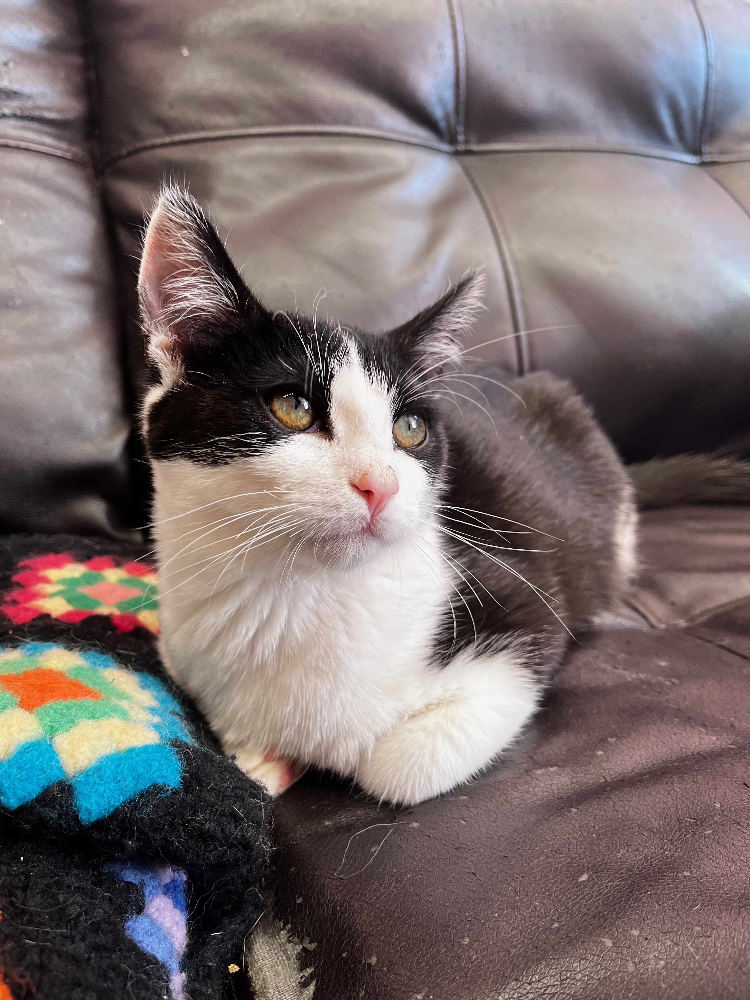
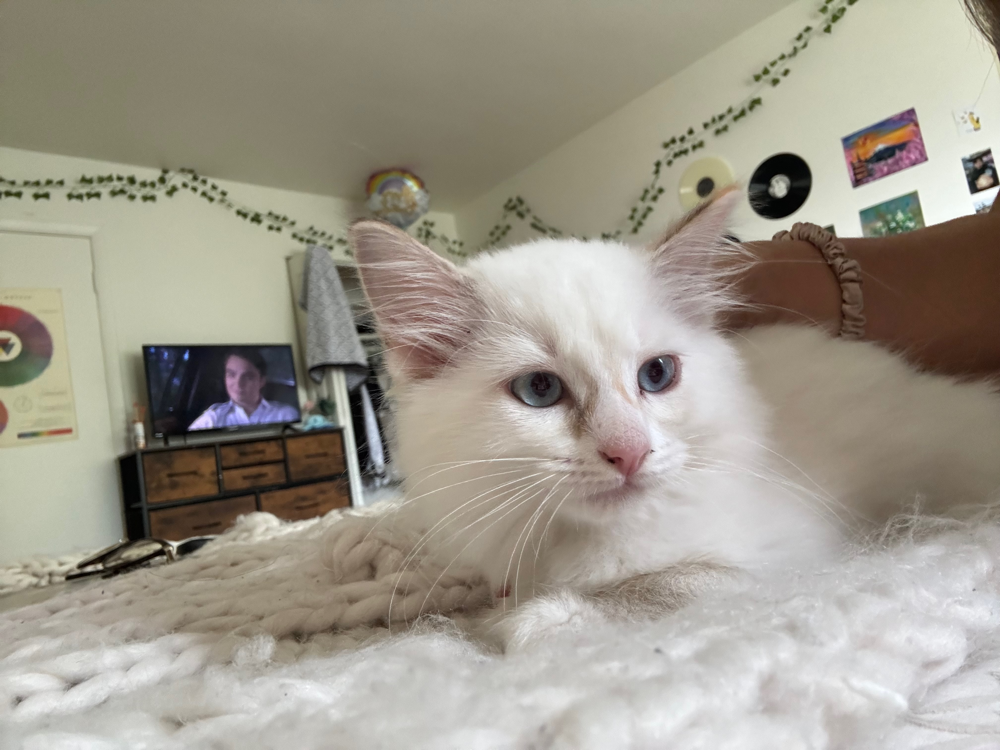
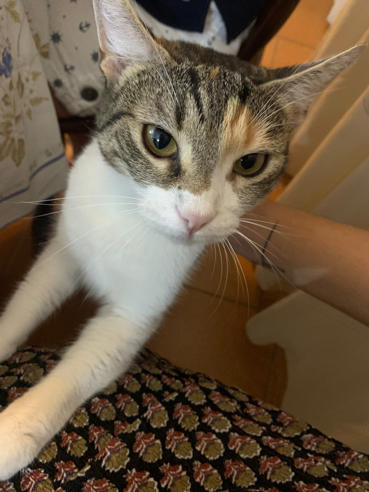
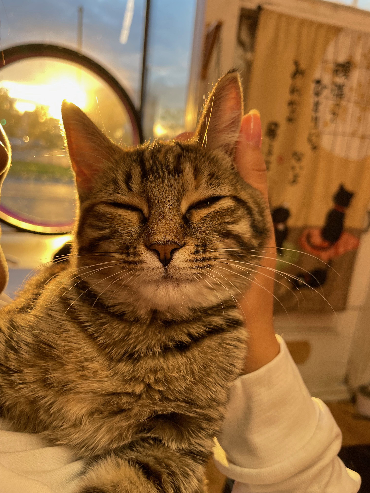
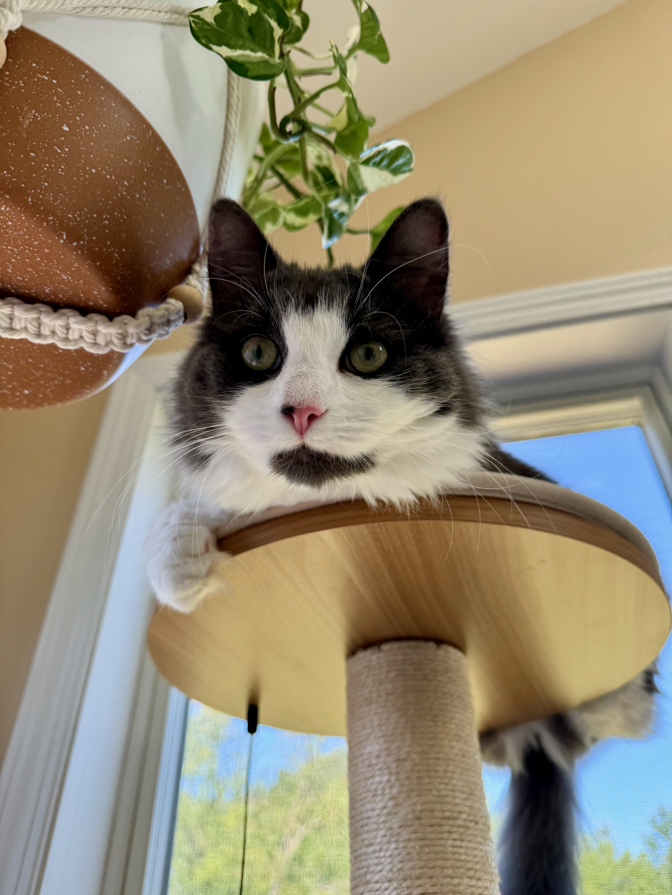
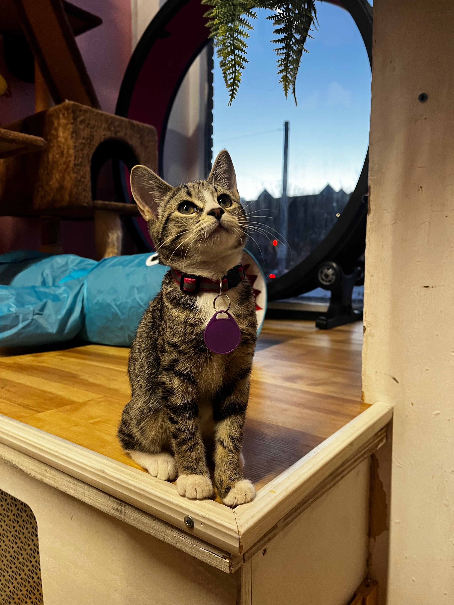

Adoptable Cats
Luna
Playful black-and-white beauty who loves chasing feather toys. Luna is two years old and has a sweet, gentle demeanor. She’s great with children and enjoys lounging in sunny spots.
Mochi
Fluffy, white one-year-old with a knack for finding the softest spot on the couch. Mochi is independent but loves occasional cuddles and treats.
Sir Whiskers
This four-year-old is regal and sophisticated. He enjoys gentle head scratches and watching birds from the window. He’s a bit shy at first but warms up quickly.
Daisy
A one-year-old with a bubbly personality. Daisy is always on the move, ready for the next adventure or a game of hide and seek.
Oliver
This five-year-old gentle giant is a gray Maine Coon mix. He’s affectionate, loves belly rubs, and is a pro at making biscuits with his big, fluffy paws.
Peaches
A two-year-old with a sassy yet lovable attitude. Peaches adores laser pointers and will keep you entertained with her playful antics.
Cat Care Tips
Choose the Right Litter
Avoid scented litter, as it can irritate your cat’s nose. Opt for unscented, clumping varieties. Here's a quick video that explains why unscented litter is better:
Scratching is Normal
Scratching isn't just a nuisance—it's essential for your cat's health. Learn why scratching is important and how to redirect your cat from your furniture to appropriate scratching posts:
Keep Them Hydrated
Cats often don't drink enough water. A cat water fountain can encourage them to drink more. Watch this video for helpful tips on selecting a fountain:
Regular Vet Visits
Even if your cat seems healthy, annual check-ups are essential for catching potential issues early. Learn why annual check-ups are essential:
Diet is Key
Avoid overfeeding and consult your vet for the best food options for your cat's age and health. Avoid overfeeding, and check out this video for expert advice on choosing the right food: